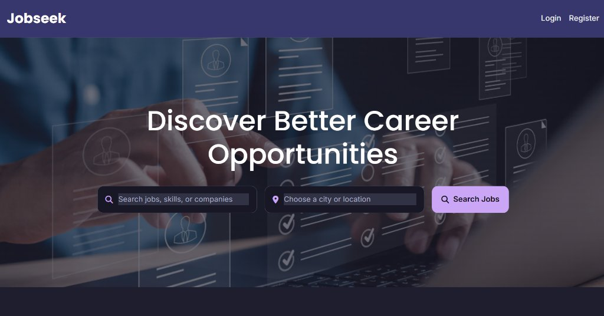
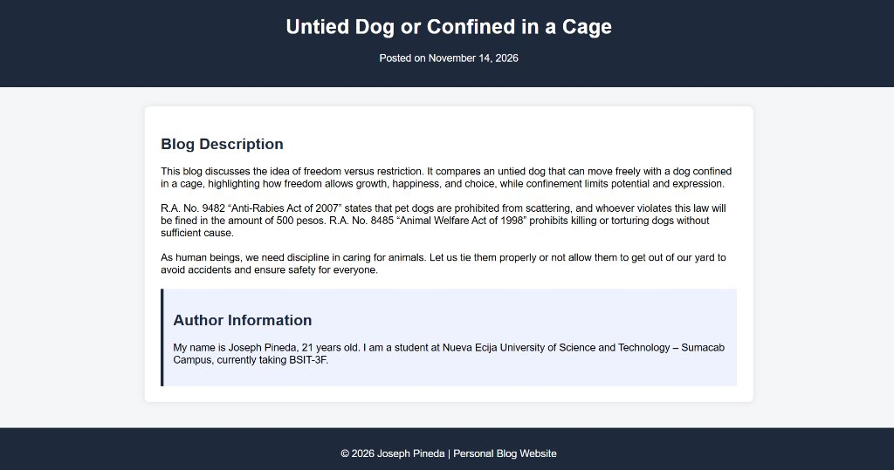
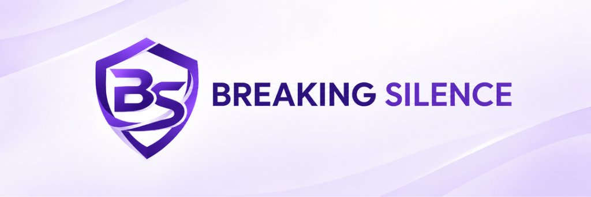
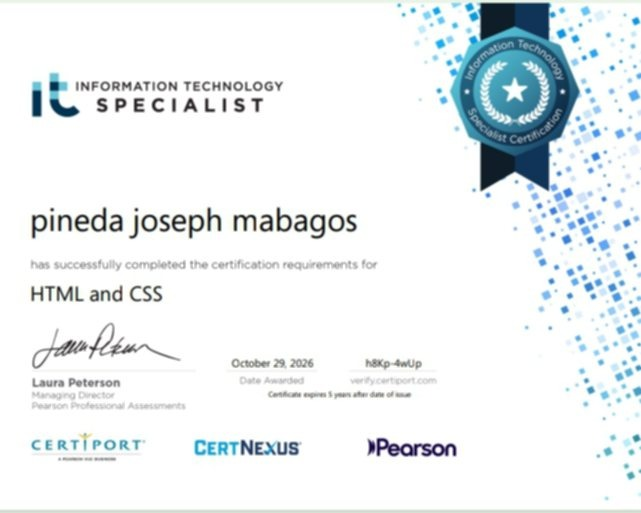
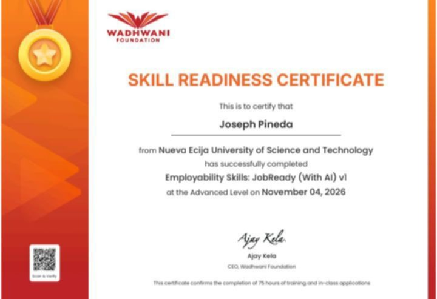
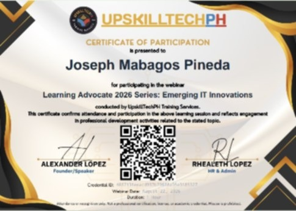

WEB APPLICATIONJobseek
↗A full-featured job listing platform built with Laravel — job seekers can search and filter opportunities while employers can post listings with ease.
HELLO, I'M JOSEPH PINEDA
UI/UX DESIGNER · WEB DEVELOPER · IT PROFESSIONAL
SCROLL TO EXPLOREWHO I AM
I’m Joseph Pineda, an Information Technology professional focused on creating thoughtful, useful, and visually engaging digital experiences.
With a foundation in UI/UX design, web development, and wireframing, I enjoy turning ideas into clear and user-friendly interfaces. I work with tools and technologies such as Figma, HTML, CSS, and Laravel, and I’m always looking for ways to learn, improve, and build better digital products.
A selection of academic and personal projects that reflect my interest in practical solutions, clean layouts, and better user experiences.

WEB APPLICATIONA full-featured job listing platform built with Laravel — job seekers can search and filter opportunities while employers can post listings with ease.

RESPONSIVE WEBSITEA personal blog titled "Untied Dog or Confined in a Cage" — a thoughtful read on freedom vs. restriction, built with clean HTML/CSS and a focus on readability.

UI / UX DESIGNA bold digital advocacy brand identity — designed to empower voices through strong visual language, meaningful iconography, and an impactful shield logo.
CLICK ANY PROJECT CARD TO EXPLORE — SCREENSHOTS & LIVE PREVIEWS INCLUDED.
Continuous learning is part of the process. These are my certificates and professional development achievements.

IT SPECIALIST

SKILL READINESS
CERTIFICATE OF PARTICIPATION
CERTIFICATE OF PARTICIPATION

CERTIFICATE OF PARTICIPATION
HAVE A PROJECT OR OPPORTUNITY?
I'm open to connecting, learning, and collaborating on meaningful digital projects. Have an idea? Let's talk.
pinedajosephmabagos20217@gmail.com↗